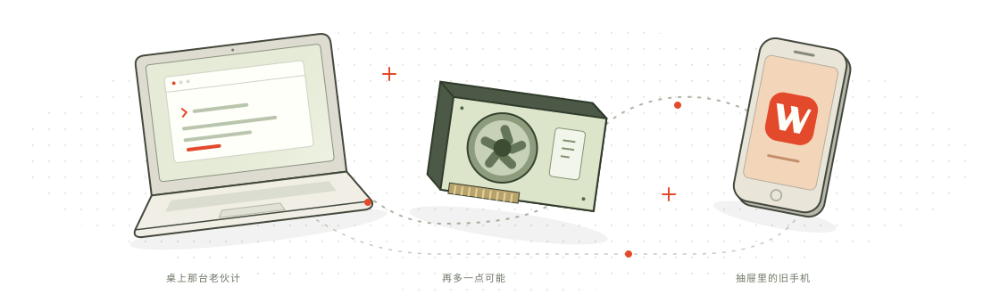

能确定的，就别反复猜。
路径、行号、搜索词已经明确，就由本地规则构造操作。把重复小活交给确定性的工具，减少让模型反复生成参数的需要。
好钢用在刀刃上。好 token，花在真难题上。
搬砖、查文件、拧螺丝，让小模型和本地工具来扛。真正需要动脑的地方，再请大模型出场。这就是 Wrench 想做的：让你的硬件多出点力，让你的预算花得值。
目标是免费给大家用。目前还在开发者预览阶段。

画的是我们想去的地方。哪些设备能跑，还得一台台验证。
查资料、翻长历史、定位原文、读配置、查状态，这些事情攒起来，也能吃掉不少时间和 token。Wrench 的目标是把其中能验证的工作接到本地，整理好证据再交给大模型，让它集中精力理解需求、判断原因、设计修改。为配合大模型而生，为把 AI 成本打下来而做。
路径、行号、搜索词已经明确，就由本地规则构造操作。把重复小活交给确定性的工具，减少让模型反复生成参数的需要。
独立验证器先检查权限和参数，再由受限执行器完成允许的操作。返回实际结果和出处，补丁只出草稿给你审。
超出范围或没通过检查，就返回 abstain，由调用方保留原任务、安排兜底。不给小错误一路滚成大返工的机会，是这套设计的目标。
比如修登录超时：大模型判断要查什么 → Wrench 读取允许范围内的配置并返回证据 → 大模型继续诊断和提出修改。
“更能扛事情”，是我们想通过这种分工实现的目标：本地多分担可验证的工作，整个流程少绕路、少返工。Coder 也能调用工具、接入验证；我们还没有证明 Wrench 比它们普遍更强、更快或更便宜。当前主线是规则、检索与验证，学习式自由路由关闭。分工、abstain 和怎么验收，展开讲 →
我们的远期愿景：同样的活儿干完，把云端模型花费压到原来的 0.5% 以下，让留下的每一分预算都花在好 token 上。眼下先靠本地规则工具把小事做稳；整笔账到底能省多少，还得实测。
面向 4M token 级输入，先在本地检索相关材料，再交给有限的模型工作上下文。走混合检索路线，不是原生 4M 注意力，也不保证条条都记得。
净强模型 token 减少 95%，也就是在评估任务里用到基准的 1/20 或更少。这是目标，校验、重试和备用调用都要记账。
把付费云端调用留给真难题。这是同等任务的云端费用愿景，尚未实现，也不是承诺把你的包月费砍到这个数。
这个有限 worker 的自主文件写入权限为零。读取、校验、出草稿给你审阅。不能为了省点 token，顺手把仓库改成惊喜盲盒。
token 少了多少、钱省了多少，是两笔不同的账。本地开销也得算。怎么算，我们摊开说 ↗
读几行配置、找一段文字、看看 Git 状态，这些活儿未必每次都需要大模型出场。Wrench 先接住能检查清楚的小任务，再把需要动脑的部分交回更强的 AI 助手。
读配置、找原文、查 Git 状态。指令明确、范围清楚的活儿，可以走本地规则处理，不必每一步都请模型猜。
认识一下这个小帮手 ↗每个操作提案都交给独立校验器过一遍。读取有边界，补丁只出草稿，不会替你悄悄改文件。
它的权限到哪儿为止 ↗遇上范围之外的任务，Wrench 会明确拒绝。上层工作流保留原请求，再决定是否请更强的模型接手。
看看和哪些工具配合 ↗下面是实际 Python 校验器跑出来的保存结果。点三个例子就能看懂：什么能做，什么会被拦下。网页不会调用模型，也不会读取你的文件。
在小显存设备上，把一条范围明确的开发流程做出实际价值。正确率、内存、延迟和总成本，都要算。
起步人群 · 硬件支持待实测下一站是不到 2 GB 显存的有用流程，也探索旧手机。装得下只是第一步，还得真能帮上忙。
下一阶段的硬件目标以后，也许能把闲着的计算能力分享给信得过的人。你这边歇一会儿，他那边往前走一步。
长远想法 · 还没实现